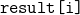
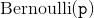
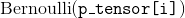
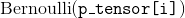
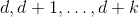
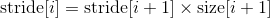

torch.Tensor
译者：hijkzzz
torch.Tensor 是一种包含单一数据类型元素的多维矩阵.
Torch定义了八种CPU张量类型和八种GPU张量类型：
| Data type | dtype | CPU tensor | GPU tensor |
|---|---|---|---|
| 32-bit floating point | torch.float32 or torch.float |
torch.FloatTensor |
torch.cuda.FloatTensor |
| 64-bit floating point | torch.float64 or torch.double |
torch.DoubleTensor |
torch.cuda.DoubleTensor |
| 16-bit floating point | torch.float16 or torch.half |
torch.HalfTensor |
torch.cuda.HalfTensor |
| 8-bit integer (unsigned) | torch.uint8 |
torch.ByteTensor |
torch.cuda.ByteTensor |
| 8-bit integer (signed) | torch.int8 |
torch.CharTensor |
torch.cuda.CharTensor |
| 16-bit integer (signed) | torch.int16 or torch.short |
torch.ShortTensor |
torch.cuda.ShortTensor |
| 32-bit integer (signed) | torch.int32 or torch.int |
torch.IntTensor |
torch.cuda.IntTensor |
| 64-bit integer (signed) | torch.int64 or torch.long |
torch.LongTensor |
torch.cuda.LongTensor |
torch.Tensor 是默认的tensor类型 (torch.FloatTensor) 的简称.
Tensor 可以用torch.tensor()转换Python的 list 或序列生成：
>>> torch.tensor([[1., -1.], [1., -1.]])
tensor([[ 1.0000, -1.0000],
[ 1.0000, -1.0000]])
>>> torch.tensor(np.array([[1, 2, 3], [4, 5, 6]]))
tensor([[ 1, 2, 3],
[ 4, 5, 6]])
警告
torch.tensor() 总是拷贝 data. 如果你有一个 Tensor data 并且仅仅想改变它的 requires_grad 属性, 可用 requires_grad_() or detach() 来避免拷贝. 如果你有一个 numpy 数组并且想避免拷贝, 请使用 torch.as_tensor().
指定数据类型的Tensor可以通过传递参数 torch.dtype 和/或者 torch.device 到构造函数生成：
>>> torch.zeros([2, 4], dtype=torch.int32)
tensor([[ 0, 0, 0, 0],
[ 0, 0, 0, 0]], dtype=torch.int32)
>>> cuda0 = torch.device('cuda:0')
>>> torch.ones([2, 4], dtype=torch.float64, device=cuda0)
tensor([[ 1.0000, 1.0000, 1.0000, 1.0000],
[ 1.0000, 1.0000, 1.0000, 1.0000]], dtype=torch.float64, device='cuda:0')
>>> x = torch.tensor([[1, 2, 3], [4, 5, 6]])
>>> print(x[1][2])
tensor(6)
>>> x[0][1] = 8
>>> print(x)
tensor([[ 1, 8, 3],
[ 4, 5, 6]])
使用 torch.Tensor.item() 从只有一个值的Tensor中获取Python Number：
>>> x = torch.tensor([[1]])
>>> x
tensor([[ 1]])
>>> x.item()
1
>>> x = torch.tensor(2.5)
>>> x
tensor(2.5000)
>>> x.item()
2.5
Tensor可以通过参数 requires_grad=True 创建, 这样 torch.autograd 会记录相关的运算实现自动求导.
>>> x = torch.tensor([[1., -1.], [1., 1.]], requires_grad=True)
>>> out = x.pow(2).sum()
>>> out.backward()
>>> x.grad
tensor([[ 2.0000, -2.0000],
[ 2.0000, 2.0000]])
每一个tensor都有一个相应的 torch.Storage 保存其数据. tensor 类提供了一个多维的、strided视图, 并定义了数值操作.
注意
更多关于 torch.dtype, torch.device, 和 torch.layout 等 torch.Tensor的属性, 见 Tensor Attributes.
注意
注意：修改tensor的方法可以用一个下划线后缀来标示.比如, torch.FloatTensor.abs_() 会在原地计算绝对值并返回修改的张量, 而 torch.FloatTensor.abs() 将会在新张量中计算结果.
注意
为了改变已有的 tensor 的 torch.device 和/或者 torch.dtype, 考虑使用 to() 方法.
这里有少数几种生成Tensor的方法, 取决于你的实际情况.
- 从已经存在的数据生成, 用
torch.tensor(). - 生成特殊尺寸的Tensor, 用
torch.*creation ops (见 Creation Ops). - 生成与其它Tensor尺寸相同的Tensor (并且数据类型相同), 用
torch.*_likecreation ops (见 Creation Ops). - 生成与其它Tesor数据类型相同但是尺寸不同的Tensor, 用
tensor.new_*creation ops.
返回一个新的Tensor用 data 作为tensor data.默认情况下, 返回的Tensor有相同的 torch.dtype 和 torch.device .
警告
new_tensor() 总是拷贝 data. 如果 你有一个 Tensor data 并且想避免拷贝, 使用 torch.Tensor.requires_grad_() 或者 torch.Tensor.detach(). 如果你有一个 numpy 数组并且想避免拷贝, 使用 torch.from_numpy().
警告
当 data 是一个 tensor x, new_tensor() 读取 x 的 'data' 并且创建一个叶子变量. 因此 tensor.new_tensor(x) 等价于 x.clone().detach() 并且 tensor.new_tensor(x, requires_grad=True) 等价于 x.clone().detach().requires_grad_(True). 推荐使用 clone() 和 detach().
参数:
- data (array_like) – 返回的 Tensor 拷贝
data. - dtype (
torch.dtype, 可选) – 期望返回的Tensor的数据类型. 默认值: 如果是 None, 等于torch.dtype. - device (
torch.device, 可选) – 期望返回的Tesor所在设备. 默认值: 如果是 None, 等于torch.device. - requires_grad (bool, 可选) – 是否为自动求导记录相关的运算. 默认值:
False.
例子:
>>> tensor = torch.ones((2,), dtype=torch.int8)
>>> data = [[0, 1], [2, 3]]
>>> tensor.new_tensor(data)
tensor([[ 0, 1],
[ 2, 3]], dtype=torch.int8)
返回一个Tesnor的尺寸等于 size 用 fill_value填充. 默认情况下, 返回的 Tensor 具有与此Tensor相同的 torch.dtype 和 torch.device.
参数:
- fill_value (scalar) – 用于填充的数值.
- dtype (
torch.dtype, 可选) – 期望返回的Tensor的数据类型. 默认值: 如果是 None, 等于torch.dtype. - device (
torch.device, 可选) – 期望返回的Tesor所在设备. 默认值: 如果是 None, 等于torch.device. - requires_grad (bool, 可选) – 是否为自动求导记录相关的运算. 默认值:
False.
例子:
>>> tensor = torch.ones((2,), dtype=torch.float64)
>>> tensor.new_full((3, 4), 3.141592)
tensor([[ 3.1416, 3.1416, 3.1416, 3.1416],
[ 3.1416, 3.1416, 3.1416, 3.1416],
[ 3.1416, 3.1416, 3.1416, 3.1416]], dtype=torch.float64)
返回一个Tesnor的尺寸等于 size 用 未初始化的值填充. 默认情况下, 返回的 Tensor 具有与此Tensor相同的 torch.dtype 和 torch.device.
Parameters:
- dtype (
torch.dtype, 可选) – 期望返回的Tensor的数据类型. 默认值: 如果是 None, 等于torch.dtype. - device (
torch.device, 可选) – 期望返回的Tesor所在设备. 默认值: 如果是 None, 等于torch.device. - requires_grad (bool, 可选) – 是否为自动求导记录相关的运算. 默认值:
False.
Example:
>>> tensor = torch.ones(())
>>> tensor.new_empty((2, 3))
tensor([[ 5.8182e-18, 4.5765e-41, -1.0545e+30],
[ 3.0949e-41, 4.4842e-44, 0.0000e+00]])
返回一个Tesnor的尺寸等于 size 用 1填充. 默认情况下, 返回的 Tensor 具有与此Tensor相同的 torch.dtype 和 torch.device.
Parameters:
- size (int...) – list, tuple, 或者
torch.Size定义了输出Tensor的形状. - dtype (
torch.dtype, 可选) – 期望返回的Tensor的数据类型. 默认值: 如果是 None, 等于torch.dtype. - device (
torch.device, 可选) – 期望返回的Tesor所在设备. 默认值: 如果是 None, 等于torch.device. - requires_grad (bool, 可选) – 是否为自动求导记录相关的运算. 默认值:
False.
例子:
>>> tensor = torch.tensor((), dtype=torch.int32)
>>> tensor.new_ones((2, 3))
tensor([[ 1, 1, 1],
[ 1, 1, 1]], dtype=torch.int32)
返回一个Tesnor的尺寸等于 size 用 0填充. 默认情况下, 返回的 Tensor 具有与此Tensor相同的 torch.dtype 和 torch.device.
参数:
- size (int...) – list, tuple, 或者
torch.Size定义了输出Tensor的形状. - dtype (
torch.dtype, 可选) – 期望返回的Tensor的数据类型. 默认值: 如果是 None, 等于torch.dtype. - device (
torch.device, 可选) – 期望返回的Tesor所在设备. 默认值: 如果是 None, 等于torch.device. - requires_grad (bool, 可选) – 是否为自动求导记录相关的运算. 默认值:
False.
例子:
>>> tensor = torch.tensor((), dtype=torch.float64)
>>> tensor.new_zeros((2, 3))
tensor([[ 0., 0., 0.],
[ 0., 0., 0.]], dtype=torch.float64)
True 如果 Tensor 在 GPU 上, 否则 False.
torch.device Tensor 所在的设备.
原地版本的 abs()
原地版本的 acos()
add(value=1, other) -> Tensor
add_(value=1, other) -> Tensor
原地版本的 add()
原地版本的 addbmm()
原地版本的 addcdiv()
原地版本的 addcmul()
原地版本的 addmm()
原地版本的 addmv()
原地版本的 addr()
应用函数 callable 到Tensor中的每一个元素, 用 callable的返回值替换每一个元素.
注意
这个函数仅仅能在CPU上工作, 并且不要用于需要高性能的代码区域.
原地版本的 asin()
原地版本的 atan2()
原地版本的 atan()
原地版本的 baddbmm()
返回一个Tensor, 每一个  都是独立采样于  .
. self 必须是浮点型 dtype, 并且返回值有相同的 dtype.
从  独立采样填充 self 的每一个位置.self 可以是整型 dtype.
p_tensor 必须是一个包含概率的 Tensor 用于取得二元随机数.
self tensor 的  元素将会被设置为采样于  的值.
元素将会被设置为采样于  的值.
self 可以有整型 dtype, 但是 :attrp_tensor 必须有浮点型 dtype.
可参考 bernoulli() and torch.bernoulli()
self.byte() is equivalent to self.to(torch.uint8). See to().
用取自 Cauchy 分布得值填充Tensor:

原地版本的 ceil()
self.char() 等价于 self.to(torch.int8). 见 to().
原地版本的 clamp()
返回一份拷贝的 self tensor. 这份拷贝有 self 相同的数据和类型.
注意
与copy_()不同, 此函数会被记录在计算图中. 传给克隆tensor的梯度将传播到原始tensor.
返回一个连续的得Tensor, 其data与 self 相同. 如果 self tensor 是连续的, 此函数返回 self tensor 自身.
从 src 拷贝元素到 self tensor 然后返回 self.
src tensor 必须与 self tensor 是 broadcastable. 但数据类型可以不同, 所在的设备也可以不同.
参数:
- src (Tensor) – 源 tensor
- non_blocking (bool) – 如果是
True并且这次复制在 CPU 和 GPU 之间进行, 这次复制将会是异步的. 其他情况则没有影响.
原地版本的 cos()
原地版本的 cosh()
返回一个拷贝对象于 CPU 内存中.
如果这个对象已经在 CPU 内存中, 并且在者正确的设备上, 那么将会返回其本身.
返回一个拷贝对象于 CUDA 内存中.
如果这个对象已经在 CUDA 内存中, 并且在者正确的设备上, 那么将会返回其本身.
参数:
- device (
torch.device) –目标GPU设备. 默认值是当前GPU. - non_blocking (bool) – 如果是
True并且源在pinned memory中, 这次拷贝将是异步的.否则此参数没有影响. 默认值:False.
返回 self tensor 的第一个元素的指针.
返回 self tensor 的维度.
原地版本的 div()
self.double() 等价于 self.to(torch.float64). 见 to().
返回每个元素占用的字节数
Example:
原地版本的 eq()
原地版本的 erf()
原地版本的 erfc()
原地版本的 erfinv()
原地版本的 exp()
原地版本的 expm1()
返回一个新的 self tensor 的视图, 其中单一维度扩展到更大的尺寸.
传递-1意味着不改变该维度的大小.
tensor 也可以扩展到更大的维度, 新的维度将会附加在前面.对于新维度, 其大小不能设置为- 1.
扩展张量不会分配新的内存, 但只会在现有张量上创建一个新的视图, 其中通过将stride设置为0, 第一个尺寸的维度会扩展到更大的尺寸.大小为1的任何维度都可以扩展到任意值, 而无需分配新内存.
| 参数: | *sizes (torch.Size or int...) – 期望扩展的尺寸 |
|---|---|
例子:
>>> x = torch.tensor([[1], [2], [3]])
>>> x.size()
torch.Size([3, 1])
>>> x.expand(3, 4)
tensor([[ 1, 1, 1, 1],
[ 2, 2, 2, 2],
[ 3, 3, 3, 3]])
>>> x.expand(-1, 4) # -1 意味着不会改变该维度
tensor([[ 1, 1, 1, 1],
[ 2, 2, 2, 2],
[ 3, 3, 3, 3]])
扩展这个 tensor 使得其尺寸和 other 相同. self.expand_as(other) 等价于 self.expand(other.size()).
请看 expand() 获得更多关于 expand 的信息.
| 参数: | other (torch.Tensor) – 返回的 tensor 的尺寸和 other. 相同 |
|---|---|
用取自 exponential 分布 的元素填充 self tensor :

用指定的值填充 self.
self.float() 等价于 self.to(torch.float32). See to().
原地版本的 floor()
原地版本的 fmod()
原地版本的 frac()
原地版本的 ge()
用取自geometric 分布的值填充 self :

对于 CUDA tensors, 这个函数返回一个 GPU 序号, 对应 tensor 所在的设备. 对于 CPU tensors, 抛出一个错误.
Example:
>>> x = torch.randn(3, 4, 5, device='cuda:0')
>>> x.get_device()
0
>>> x.cpu().get_device() # 运行时错误: get_device 没有在 torch.FloatTensor 上实现
原地版本的 gt()
self.half() 等价于 self.to(torch.float16). 见 to().
根据参数index 中的索引的顺序, 累加 tensor 中的元素到 self tensor, 例如, 如果 dim == 0 并且 index[i] == j, 则第 i 行 tensor 会被加到第 j行.
tensor 第 dim 维度 必须和 index(必须是一个向量) 的长度相同, 并且其它维度必须和 self 匹配, 否则将会抛出一个错误.
注意
当使用 CUDA 作为后端, 这个操作可能导致不确定性行为, 且不容易关闭. 请看 Reproducibility.
Parameters:
例子:
>>> x = torch.ones(5, 3)
>>> t = torch.tensor([[1, 2, 3], [4, 5, 6], [7, 8, 9]], dtype=torch.float)
>>> index = torch.tensor([0, 4, 2])
>>> x.index_add_(0, index, t)
tensor([[ 2., 3., 4.],
[ 1., 1., 1.],
[ 8., 9., 10.],
[ 1., 1., 1.],
[ 5., 6., 7.]])
根据参数index 中的选择的索引, 复制 tensor 中的元素到 self tensor, 例如, 如果 dim == 0 并且 index[i] == j, 则第 i 行 tensor 会被加到第 j行.
tensor 第 dim 维度 必须和 index(必须是一个向量) 的长度相同, 并且其它维度必须和 self 匹配, 否则将会抛出一个错误.
Parameters:
例子:
>>> x = torch.zeros(5, 3)
>>> t = torch.tensor([[1, 2, 3], [4, 5, 6], [7, 8, 9]], dtype=torch.float)
>>> index = torch.tensor([0, 4, 2])
>>> x.index_copy_(0, index, t)
tensor([[ 1., 2., 3.],
[ 0., 0., 0.],
[ 7., 8., 9.],
[ 0., 0., 0.],
[ 4., 5., 6.]])
根据 index 中指定的顺序索引, 用值 val填充 self tensor 中的元素.
参数:
例子:
>>> x = torch.tensor([[1, 2, 3], [4, 5, 6], [7, 8, 9]], dtype=torch.float)
>>> index = torch.tensor([0, 2])
>>> x.index_fill_(1, index, -1)
tensor([[-1., 2., -1.],
[-1., 5., -1.],
[-1., 8., -1.]])
根据 indices (是一个 Tensors 的tuple)中指定的索引, 取出 tensor value 中的值放入 tensor self . 表达式 tensor.index_put_(indices, value) 等价于 tensor[indices] = value. 返回 self.
如果 accumulate 等于 True, tensor 中的元素会被加到 self. 如果是 False, 且 indices 中含有重复的元素, 则行为是未定义的.
参数:
- indices (tuple of LongTensor) – tensors 用于索引
self. - value (Tensor) – 与
self有相同数据类型的 tensor. - accumulate (bool) – 是否累加到自身
self.int() is equivalent to self.to(torch.int32). See to().
返回 True 如果 self tensor 在内存中是连续存储的.
返回 true 如果 tensor 储存在pinned memory
返回 True 如果此对象在 Torch C API 中引用的 THTensor 对象和给定 tensor 是相同的.
返回 tensor 中的值作为一个标准的 Python number. 仅在只有一个元素的时候有效. 对于其他情况, 见 tolist().
这个操作是不可微分的.
例子:
原地版本的 le()
原地版本的 lerp()
原地版本的 log()
原地版本的 log10()
原地版本的 log1p()
原地版本的 log2()
用 mean 和std 初始化的 log-normal 分布 中取出的值填充 self. 注意 mean 和 std 是下面的 normal 分布的平均值和标准差, 而不是返回的分布:

self.long() is equivalent to self.to(torch.int64). See to().
原地版本的 lt()
对 self tensor 和 给定的 tensor 中的每一个元素应用 callable 然后把结果存于 self tensor. self tensor 和给定的 tensor 必须可广播 broadcastable.
callable 应该有下面的函数签名:
从 source 复制元素到 self tensor 当对应 mask 对应的值是 1. mask 的形状必须和底层 tensor 可广播 broadcastable. source 的元素数量至少和 mask里面的1一样多
Parameters:
- mask (ByteTensor) – 二值掩码
- source (Tensor) – 源 tensor
注意
mask 操作于 self tensor, 而不是给定的 source tensor.
用value填充 self tensor 中的元素, 当对应位置的 mask 是1. mask 的形状必须和底层 tensor broadcastable.
参数:
- mask (ByteTensor) – 二值掩码
- value (float) – 用于填充的值
原地版本的 mul()
原地版本的 mvlgamma()
Example:
>>> x = torch.tensor([[1, 2, 3], [4, 5, 6], [7, 8, 9]])
>>> x.narrow(0, 0, 2)
tensor([[ 1, 2, 3],
[ 4, 5, 6]])
>>> x.narrow(1, 1, 2)
tensor([[ 2, 3],
[ 5, 6],
[ 8, 9]])
Alias for dim()
原地版本的 ne()
原地版本的 neg()
别名 numel()
见 :func: torch.norm
用采样于 normal 分布的元素填充 self tensor, normal 分布使用参数 mean and std初始化.
返回 self tensor 作为一个 NumPy ndarray. 此 tensor 和返回的 ndarray 共享同一个底层存储. 改变self tensor 将会同时改变 ndarray .
排列 tensor 的维度.
| 参数: | *dims (int...) – 维度的排列顺序 |
|---|---|
Example
>>> x = torch.randn(2, 3, 5)
>>> x.size()
torch.Size([2, 3, 5])
>>> x.permute(2, 0, 1).size()
torch.Size([5, 2, 3])
原地版本的 pow()
从 tensor 中复制元素到 indices 指定的位置. 对于目的索引, self tensor 被当作一个 1-D tensor.
如果 accumulate 是 True, tensor 中的元素被被加到 self. 如果 accumulate 是 False, 当 indices 中有重复索引时行为未定义.
Parameters:
例子:
>>> src = torch.tensor([[4, 3, 5],
[6, 7, 8]])
>>> src.put_(torch.tensor([1, 3]), torch.tensor([9, 10]))
tensor([[ 4, 9, 5],
[ 10, 7, 8]])
用离散均匀分布介于 [from, to - 1] 采样的数字填充 self tensor. 如果没有特别指定, 这些采样的数值被 self tensor's 数据类型界定. 然而, 对于浮点型, 如果没有特别指定, 范围将是 [0, 2^mantissa] 来确保每一个值是可表示的. 例如, torch.tensor(1, dtype=torch.double).random_() 将会被设为 [0, 2^53].
原地版本的 reciprocal()
原地版本的 remainder()
原地版本的 renorm()
在指定的维度重复这个 tensor.
不像 expand(), 这个函数会拷贝底层数据.
警告
torch.repeat() 的行为和 numpy.repeat 不一样, 更类似于 numpy.tile.
| 参数: | sizes (torch.Size or int...) – 每个维度重复的次数 |
|---|---|
例子:
>>> x = torch.tensor([1, 2, 3])
>>> x.repeat(4, 2)
tensor([[ 1, 2, 3, 1, 2, 3],
[ 1, 2, 3, 1, 2, 3],
[ 1, 2, 3, 1, 2, 3],
[ 1, 2, 3, 1, 2, 3]])
>>> x.repeat(4, 2, 1).size()
torch.Size([4, 2, 3])
设置是否应该自动求导: 原地设置这个 tensor 的 requires_grad 属性.返回这个 tensor.
require_grad_() 的主要使用情况是告诉自动求导开始记录Tensor tensor上的操作. 如果 tensor 的 requires_grad=False (因为它是通过 DataLoader 获得或者需要预处理或初始化), tensor.requires_grad_() 将会使得自动求导开始生效.
| 参数: | requires_grad (bool) – 是否自动求导应该记录相关操作. Default: True. |
|---|---|
例子:
>>> # Let's say we want to preprocess some saved weights and use
>>> # the result as new weights.
>>> saved_weights = [0.1, 0.2, 0.3, 0.25]
>>> loaded_weights = torch.tensor(saved_weights)
>>> weights = preprocess(loaded_weights) # some function
>>> weights
tensor([-0.5503, 0.4926, -2.1158, -0.8303])
>>> # Now, start to record operations done to weights
>>> weights.requires_grad_()
>>> out = weights.pow(2).sum()
>>> out.backward()
>>> weights.grad
tensor([-1.1007, 0.9853, -4.2316, -1.6606])
返回一个 tensor, 其data和元素数量与 self 一样, 但是改变成指定的形状. 这个方法返回一个tensor的试图 如果 shape 和当前的形状是兼容的. 见 torch.Tensor.view() 关于是什么时候返回一个 view.
| 参数: | shape (tuple of python:ints or int...) – 期望变成的形状 |
|---|---|
返回一个tensor形状与 other 相同. self.reshape_as(other) 等价于 self.reshape(other.sizes()). 这个方法返回一个tensor的试图 如果 self.reshape(other.sizes()) 和当前的形状是兼容的. 见 torch.Tensor.view() 关于是什么时候返回一个 view.
请参考 reshape() 获得更多关于 reshape 的信息.
| 参数: | other (torch.Tensor) – 返回的tensor形状与 other 一致. |
|---|---|
缩放 self tensor到指定的大小. 如果指定的元素数量比当前的要大, 底层的存储结构会缩放到合适的大小. 如果数量更小, 底层存储不变. 当前的元素都会被保留, 没有任何的新的初始化.
警告
这是一个底层的操作. 存储被重新解释为C-contiguous, 忽略当前stride(除非目标大小等于当前大小, 在这种情况下tensor保持不变）.在大多数情况下, 您将要使用 view(), 它会检查连续性, 或者 reshape(), 在必要的时候会拷贝数据. 如果想要改变大小并且自定义stride, 见 set_().
| 参数: | sizes (torch.Size or int...) – 期望的大小 |
|---|---|
例子:
缩放 self tensor 的大小与参数 tensor 相同. 等价于 self.resize_(tensor.size()).
原地版本的 round()
原地版本的 rsqrt()
根据 index tensor 中指定的索引, 将所有 tensor src 中的值写入self . 对于 src 中的每一个值, 当 dimension != dim, 它的输出的索引由 src 中的索引指定, 当 dimension = dim, 由 index 中对应的值指定.
对于一个 3-D tensor, self 的更新规则如下:
self[index[i][j][k]][j][k] = src[i][j][k] # if dim == 0
self[i][index[i][j][k]][k] = src[i][j][k] # if dim == 1
self[i][j][index[i][j][k]] = src[i][j][k] # if dim == 2
这是 gather() 中描述的方式的逆向操作.
self, index and src (if it is a Tensor) 应该有相同数量的维度. 同时也要求 index.size(d) <= src.size(d) 对于每一个维度 d, 而且 index.size(d) <= self.size(d) 对于每一个维度 d != dim.
此外, 关于 gather(), index 的值必须介于 0 和 self.size(dim) - 1 (包括), 并且沿着指定维度dim的行中的所有值必须是唯一的.
参数:
- dim (int) – 要索引的轴
- index (LongTensor) – 需要 scatter 的元素的索引, 可以是空的，也可以与src大小相同。当为空时，操作返回恒等
- src (Tensor or float) – scatter 源
例子:
>>> x = torch.rand(2, 5)
>>> x
tensor([[ 0.3992, 0.2908, 0.9044, 0.4850, 0.6004],
[ 0.5735, 0.9006, 0.6797, 0.4152, 0.1732]])
>>> torch.zeros(3, 5).scatter_(0, torch.tensor([[0, 1, 2, 0, 0], [2, 0, 0, 1, 2]]), x)
tensor([[ 0.3992, 0.9006, 0.6797, 0.4850, 0.6004],
[ 0.0000, 0.2908, 0.0000, 0.4152, 0.0000],
[ 0.5735, 0.0000, 0.9044, 0.0000, 0.1732]])
>>> z = torch.zeros(2, 4).scatter_(1, torch.tensor([[2], [3]]), 1.23)
>>> z
tensor([[ 0.0000, 0.0000, 1.2300, 0.0000],
[ 0.0000, 0.0000, 0.0000, 1.2300]])
根据 index tensor 中指定的索引(方式和scatter_()类似), 将所有 tensor other 中的值加到self . 对于 other 中的每一个值, 当 dimension != dim, 它的输出的索引由 other 中的索引指定, 当 dimension = dim, 由 index 中对应的值指定.
对于一个 3-D tensor, self 的更新规则如下:
self[index[i][j][k]][j][k] += other[i][j][k] # if dim == 0
self[i][index[i][j][k]][k] += other[i][j][k] # if dim == 1
self[i][j][index[i][j][k]] += other[i][j][k] # if dim == 2
self, index and other 应该有相同数量的维度. 也要求 index.size(d) <= other.size(d) 对于所有的维度 d, 并且 index.size(d) <= self.size(d) 对于所有的维度 d != dim.
此外, 关于 gather(), index 的值必须介于 0 和 self.size(dim) - 1 (包括), 并且沿着指定维度dim的行中的所有值必须是唯一的.
注意
当使用 CUDA 作为后端, 这个操作将导致不确定性行为, 并且难以停止. 请参考 Reproducibility 获得相关背景.
参数:
- dim (int) – 要索引的轴
- index (LongTensor) – 需要 scatter add 的元素的索引, 可以是空的，也可以与src大小相同。当为空时，操作返回恒等
- src (Tensor or float) – scatter 源
例子:
>>> x = torch.rand(2, 5)
>>> x
tensor([[0.7404, 0.0427, 0.6480, 0.3806, 0.8328],
[0.7953, 0.2009, 0.9154, 0.6782, 0.9620]])
>>> torch.ones(3, 5).scatter_add_(0, torch.tensor([[0, 1, 2, 0, 0], [2, 0, 0, 1, 2]]), x)
tensor([[1.7404, 1.2009, 1.9154, 1.3806, 1.8328],
[1.0000, 1.0427, 1.0000, 1.6782, 1.0000],
[1.7953, 1.0000, 1.6480, 1.0000, 1.9620]])
沿着选择的维度在给定的索引处切取 self tensor.这个函数返回的 tensor 指定的维度被移除了.
参数:
注意
select() 等价于切片. 例如, tensor.select(0, index) 等价于 tensor[index] and tensor.select(2, index) 等价于 tensor[:,:,index].
设置底层存储, 大小, 和 strides. 如果 source 是一个 tensor, self tensor 将会和 source 共享底层存储, 并有用一样的大小和 strides. 在一个 tensor 中改变元素将会反应到另一个tensor.
如果 source 是一个 Storage, 此方法设置底层存储, offset, 大小, 和 stride.
参数:
- source (Tensor or Storage) – 要设置的 tensor 或者 storage
- storage_offset (int, optional) – storage 的 offset
- size (torch.Size__, optional) – 期望的大小.默认是 source 的大小.
- stride (tuple, optional) – 期望的 stride.默认值是 C-contiguous strides.
移动底层存储到共享内存.
这是一个空操作如果底层存储已经在共享内存中或者是 CUDA tensors. 共享内存中的 tensor 不能 resize.
self.short() 等价于 self.to(torch.int16). 见 to().
原地版本的 sigmoid()
原地版本的 sign()
原地版本的 sin()
原地版本的 sinh()
返回 self tensor 的尺寸. 返回值是 [tuple] 的子类(https://docs.python.org/3/library/stdtypes.html#tuple "(in Python v3.7)").
例如:
用 mask 的索引过滤 Tensor input, 返回一个新的 SparseTensor. input 和 mask 必须有相同的形状.
参数:
- input (Tensor) – 输入 Tensor
- mask (SparseTensor) – SparseTensor 用其索引过滤
input
例子:
>>> nnz = 5
>>> dims = [5, 5, 2, 2]
>>> I = torch.cat([torch.randint(0, dims[0], size=(nnz,)),
torch.randint(0, dims[1], size=(nnz,))], 0).reshape(2, nnz)
>>> V = torch.randn(nnz, dims[2], dims[3])
>>> size = torch.Size(dims)
>>> S = torch.sparse_coo_tensor(I, V, size).coalesce()
>>> D = torch.randn(dims)
>>> D.sparse_mask(S)
tensor(indices=tensor([[0, 0, 0, 2],
[0, 1, 4, 3]]),
values=tensor([[[ 1.6550, 0.2397],
[-0.1611, -0.0779]],
[[ 0.2326, -1.0558],
[ 1.4711, 1.9678]],
[[-0.5138, -0.0411],
[ 1.9417, 0.5158]],
[[ 0.0793, 0.0036],
[-0.2569, -0.1055]]]),
size=(5, 5, 2, 2), nnz=4, layout=torch.sparse_coo)
原地版本的 sqrt()
原地版本的 squeeze()
返回底层的 storage
根据存储元素的数量(而不是字节)，返回底层存储中的tesor偏移量(offset)。
例子:
返回 self tensor 的 stride.
stride 是必要的用于在指定的维度 dim 找到下一个元素. 如果传入空, 则返回一个 tuple 包含所有维度的 stride. 否则, 将会返回一个 int 表示指定维度 dim 的 stride.
| 参数: | dim (int, optional) – 需要返回 stride 的维度 |
|---|---|
例子:
>>> x = torch.tensor([[1, 2, 3, 4, 5], [6, 7, 8, 9, 10]])
>>> x.stride()
(5, 1)
>>>x.stride(0)
5
>>> x.stride(-1)
1
self tensor 减去一个 scalar 或者 tensor. 如果 value 和 other 都被指定, 在相减之前, other 的每个元素将会用 value 缩放.
当 other 是一个 tensor, other 的形状必须和底层存储是可广播的 broadcastable .
原地版本的 sub()
原地版本的 t()
执行 tensor 类型或者设备转换. torch.dtype 和 torch.device 是从参数中推断的 self.to(*args, **kwargs).
注意
如果 self Tensor 已经有正确的 torch.dtype 和 torch.device, 则 self 被返回. 否则, 将返回复制的 self 期望的 torch.dtype 和 torch.device.
下面是调用的方法 to:
返回一个 Tensor 指定类型 dtype
返回一个 Tensor 并指定 device 和 (可选的) dtype. 如果 dtype 是 None 则推断为 self.dtype . 当启用 non_blocking, 试图在主机上执行异步转换, 例如, 转换一个 pinned memory 的 CPU Tensor 到 CUDA Tensor. 当 copy 被设置, 一个新的 tensor 被创建.
返回一个 Tensor 并有和 Tensor other 相同的 torch.dtype 和 torch.device. 当启用 non_blocking, 试图在主机上执行异步转换, 例如, 转换一个 pinned memory 的 CPU Tensor 到 CUDA Tensor. 当 copy 被设置, 一个新的 tensor 被创建.
例子:
>>> tensor = torch.randn(2, 2) # Initially dtype=float32, device=cpu
>>> tensor.to(torch.float64)
tensor([[-0.5044, 0.0005],
[ 0.3310, -0.0584]], dtype=torch.float64)
>>> cuda0 = torch.device('cuda:0')
>>> tensor.to(cuda0)
tensor([[-0.5044, 0.0005],
[ 0.3310, -0.0584]], device='cuda:0')
>>> tensor.to(cuda0, dtype=torch.float64)
tensor([[-0.5044, 0.0005],
[ 0.3310, -0.0584]], dtype=torch.float64, device='cuda:0')
>>> other = torch.randn((), dtype=torch.float64, device=cuda0)
>>> tensor.to(other, non_blocking=True)
tensor([[-0.5044, 0.0005],
[ 0.3310, -0.0584]], dtype=torch.float64, device='cuda:0')
原地版本的 tan()
原地版本的 tanh()
” tolist() -> list or number
返回tensor 作为(嵌套的) list. 对于 scalars,一个标准的 Python number 被返回, 就像 item() 一样. Tensors 会自动移动到 CPU 上如果有必要.
这个操作是不可微分的.
例子:
>>> a = torch.randn(2, 2)
>>> a.tolist()
[[0.012766935862600803, 0.5415473580360413],
[-0.08909505605697632, 0.7729271650314331]]
>>> a[0,0].tolist()
0.012766935862600803
返回一个稀疏复制的 tensor. PyTorch 支持 coordinate 格式 的稀疏 tensors. :param sparseDims: 要包含在新稀疏tensor中的稀疏维数 :type sparseDims: int, 可选的
>>> d = torch.tensor([[0, 0, 0], [9, 0, 10], [0, 0, 0]])
>>> d
tensor([[ 0, 0, 0],
[ 9, 0, 10],
[ 0, 0, 0]])
>>> d.to_sparse()
tensor(indices=tensor([[1, 1],
[0, 2]]),
values=tensor([ 9, 10]),
size=(3, 3), nnz=2, layout=torch.sparse_coo)
>>> d.to_sparse(1)
tensor(indices=tensor([[1]]),
values=tensor([[ 9, 0, 10]]),
size=(3, 3), nnz=1, layout=torch.sparse_coo)
原地版本的 transpose()
原地版本的 tril()
原地版本的 triu()
原地版本的 trunc()
返回 type 如果 dtype 没有被设置, 否则将会强制转换成 dtype 类型.
如果这已经是正确的类型，则不执行复制，并返回原始对象.
参数:
- dtype (type or string) – 期望类型
- non_blocking (bool) – 如果
True，并且源在pinned memory中，目的地在GPU上，则拷贝相对于主机异步执行。否则，这个参数没有任何作用。 - **kwargs – 为了兼容性, 可能包含
async用来置换non_blocking参数.async参数被废弃了.
返回 tensor 强制转换为 tensor 的数据类型.
如果这已经是正确的类型，则是空操作. 等价于:
tensor (Tensor): 拥有目标数据类型的 tensor
返回一个 tensor 包含 self tensor 在维度 dim 上的所有切片, 每一个的大小为 size.
step 指定每一个切片的间距.
如果 sizedim 是 self dim 维度的大小, 返回的 tensor 的维度 dim 大小是 (sizedim - size) / step + 1.
一个附加的size size的维度追加于返回的 tensor.
参数:
例子:
>>> x = torch.arange(1., 8)
>>> x
tensor([ 1., 2., 3., 4., 5., 6., 7.])
>>> x.unfold(0, 2, 1)
tensor([[ 1., 2.],
[ 2., 3.],
[ 3., 4.],
[ 4., 5.],
[ 5., 6.],
[ 6., 7.]])
>>> x.unfold(0, 2, 2)
tensor([[ 1., 2.],
[ 3., 4.],
[ 5., 6.]])
用连续均匀分布的采样值填充 self tensor:

返回 tensor 中唯一的标量作为 1-D tensor.
原地版本的 unsqueeze()
返回一个新的 tersor, 和 self 有相同的数据, 但是有不同的 shape.
返回的 tensor 共享相同的数据，并且具有相同数量的元素，但是可能有不同的大小。要 view() 一个tensor，新视图大小必须与其原始大小和 stride 兼容, 例如, 每个新视图维度必须是原始维度的子空间，或者仅跨越原始维度  满足以下连续性条件  ,
,

否则在 view() 之前, contiguous() 需要被调用. 可参考: reshape(), 返回一个view 当形状是兼容的, 否则复制 (等价于调用 contiguous()).
| 参数: | shape (torch.Size or int...) – the desired size |
|---|---|
例子:
>>> x = torch.randn(4, 4)
>>> x.size()
torch.Size([4, 4])
>>> y = x.view(16)
>>> y.size()
torch.Size([16])
>>> z = x.view(-1, 8) # the size -1 is inferred from other dimensions
>>> z.size()
torch.Size([2, 8])
使用 other 的大小 View tensor . self.view_as(other) 等价于 self.view(other.size()).
请参考 view() 获得更多信息关于 view.
| 参数: | other (torch.Tensor) – 返回的tensor 和 other 大小相同. |
|---|---|
用 0 填充 self tensor.
下面的方法是 torch.ByteTensor 独占.
返回 True 如果所有的元素非零, 否则 False.
例子:
>>> a = torch.randn(1, 3).byte() % 2
>>> a
tensor([[1, 0, 0]], dtype=torch.uint8)
>>> a.all()
tensor(0, dtype=torch.uint8)
返回 True 如果 tensor 在指定维度dim每一行的所有的元素非零, 否则 False.
如果 keepdim 是 True, 则输出 tensor 的大小与 input相同, 但尺寸为1的维度dim除外. 否则, dim 会被压缩 (见 torch.squeeze()), 导致输出张量比input少1维.
Parameters:
例子:
>>> a = torch.randn(4, 2).byte() % 2
>>> a
tensor([[0, 0],
[0, 0],
[0, 1],
[1, 1]], dtype=torch.uint8)
>>> a.all(dim=1)
tensor([0, 0, 0, 1], dtype=torch.uint8)
返回 True 如果任意元素非零, 否则 False.
例子:
>>> a = torch.randn(1, 3).byte() % 2
>>> a
tensor([[0, 0, 1]], dtype=torch.uint8)
>>> a.any()
tensor(1, dtype=torch.uint8)
返回 True 如果 tensor 在指定维度dim每一行的任意的元素非零, 否则 False.
如果 keepdim 是 True, 则输出 tensor 的大小与 input相同, 但尺寸为1的维度dim除外. 否则, dim 会被压缩 (见 torch.squeeze()), 导致输出张量比input少1维.
参数:
Example: